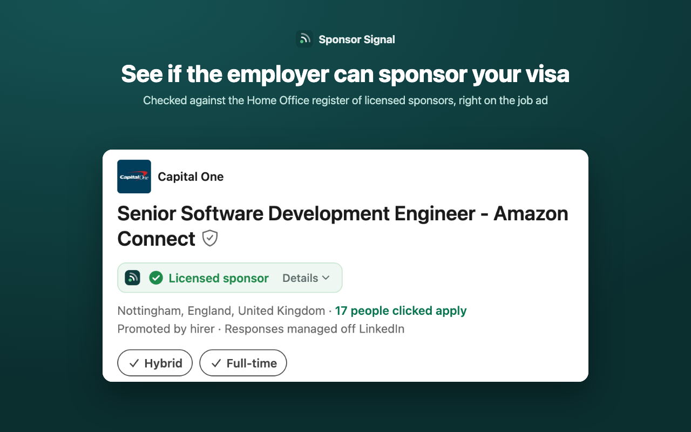

Know if they can sponsor you before you apply.
A Chrome extension for people who need a UK Skilled Worker visa. Open a job on LinkedIn, Indeed or another job site and Sponsor Signal shows whether the employer holds a sponsor licence, whether the ad says it will sponsor, and whether the salary meets the visa threshold.

What the badge tells you
- 🟢 Licensed sponsor: the employer is on the Home Office register of licensed sponsors
- 🟠 Licensed, but role says no sponsorship: the ad says "no sponsorship", and Sponsor Signal quotes the line
- 🟠 Check sponsor: no exact match, but a similar or related company is on the register
- 🟠 Recruiter: employer not named: an agency posted the job, so ask who the client is
- 🔴 No sponsor licence: nothing matching the employer is on the register
Plus a check that the advertised salary meets the Skilled Worker threshold.
Free, unlimited and private: no account, and nothing leaves your browser. The official register is downloaded from GOV.UK and checked locally, updated daily.